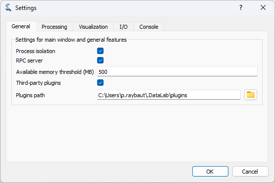

Menus#
Cette section décrit les fonctionnalités liées aux images de DataLab, en présentant les différents menus et leurs fonctions associées.
Menu « Fichier »#

Capture d’écran du menu « Fichier ».#
Le menu « Fichier » permet de créer, ouvrir, enregistrer et fermer des images. Il permet également d’importer et d’exporter des données depuis/vers des fichiers HDF5, et d’éditer les paramètres de la session courante.
Nouvelle image#
Crée une image à partir de différents modèles (types de données pris en charge : uint8, uint16, int16, float32, float64) :
Modèle |
Equation |
|---|---|
Zéros |
\(z[i] = 0\) |
Vide |
Données mémoire en l’état |
Aléatoire |
\(z[i] \in [0, z_{max})\) où \(z_{max}\) est la valeur maximale correpondant au type de données |
Gaussienne 2D |
\(z = A.exp(-\dfrac{(\sqrt{(x-x0)^2+(y-y0)^2}-\mu)^2}{2\sigma^2})\) |
Ouvrir une image#
Crée une image depuis l’un des types de fichiers pris en charge :
Type de fichier |
Extensions |
|---|---|
Fichiers PNG |
.png |
Fichiers TIFF |
.tif, .tiff |
Images 8bits |
.jpg, .gif |
Tableaux NumPy |
.npy |
Fichiers texte |
.txt, .csv, .asc |
Fichiers Andor SIF |
.sif |
Fichiers SPIRICON |
.scor-data |
Fichiers FXD |
.fxd |
Images Bitmap |
.bmp |
Enregister l’image#
Enregistre l’image sélectionnée dans l’un des types de fichier pris en charge :
Importer un fichier texte#
Importer les données depuis un fichier texte.
Voir aussi
Voir la page Importation d’un fichier texte image pour plus de détails sur l’importation de fichiers texte.
Ouvrir un fichier HDF5#
Importer les données d’un fichier HDF5.
Enregistrer un fichier HDF5#
Exporter l’ensemble de la session DataLab (tous les signaux et images) vers un fichier HDF5.
Explorer un fichier HDF5#
Ouvrir l”Explorateur HDF5 dans un nouvelle fenêtre pour explorer et éventuellement importer des données depuis un fichier HDF5.
Préférences#
Ouvrir la boîte de dialogue « Préférences ».
Menu « Edition »#

Capture d’écran du menu « Edition ».#
Le menu « Edition » permet d’éditer l’image ou le groupe d’images courant, en ajoutant, supprimant, renommant, déplaçant vers le haut ou le bas, ou dupliquant des images. Il permet également de manipuler les métadonnées, ou de gérer les titres des images.
Nouveau groupe#
Crée un nouveau groupe d’images. Les images peuvent être déplacées d’un groupe à un autre par glisser-déposer.
Renommer le groupe#
Renomme le groupe sélectionné.
Déplacer vers le haut#
Déplace la sélection vers le haut dans la liste (groupes ou images peuvent être sélectionnés). Si plusieurs objets sont sélectionnés, ils sont déplacés ensemble. Si une image sélectionnée est déjà en haut de son groupe, elle est déplacée en bas du groupe précédent.
Déplacer vers le bas#
Déplace la sélection vers le bas dans la liste (groupes ou images peuvent être sélectionnés). Si plusieurs objets sont sélectionnés, ils sont déplacés ensemble. Si une image sélectionnée est déjà en bas de son groupe, elle est déplacée en haut du groupe suivant.
Dupliquer#
Crée une nouvelle image identique à l’objet sélectionné.
Supprimer#
Supprimer l’image sélectionnée.
Supprimer tout#
Supprimer toutes les images.
Copier les métadonnées#
Copier les métadonnées de l’image sélectionnée vers le presse-papier.
Coller les métadonnées#
Coller les métadonnées depuis le presse-papier vers l’image sélectionnée.
Importer les métadonnées dans l’image#
Importer les métadonnées depuis un fichier texte au format JSON.
Exporter les métadonnées de l’image#
Exporter les métadonnées vers un fichier texte au format JSON.
Supprimer les métadonnées#
Supprime les métadonnées de l’image sélectionnée. Les métadonnées contiennent des informations additionnelles telles que les régions d’intérêt ou encore des résultats de calcul.
Ajouter le titre de l’objet au graphique#
Ajoute le titre de l’image sélectionnée au graphique associé.
Copier les titres dans le presse-papier#
Copie les titres de toutes les images dans le presse-papier, sous la forme d’un texte multiligne. Ce texte peut être ensuite utilisé pour reproduire une chaîne de traitement, par exemple.
Menu « Opérations »#

Capture d’écran du menu « Opérations ».#
Le menu « Opérations » permet d’effectuer diverses opérations sur l’image ou le groupe d’images courant. Il permet également d’extraire des profils, de distribuer des images sur une grille, ou de redimensionner des images.
Addition#
Crée une image à partir de la somme des images sélectionnées :
Moyenne#
Crée une image à partir de la moyenne des images sélectionnées :
Soustraction#
Crée une image à partir de la différence des deux images sélectionnées :
Soustraction quadratique#
Crée une image à partir de la différence quadratique des deux images sélectionnées :
Produit#
Crée une image à partir du produit de toutes les images sélectionnées :
Division#
Crée une image à partir de la division des deux images sélectionnées :
Valeur absolue#
Créee une image à partir de la valeur absolue de chaque image sélectionnée :
Partie réelle#
Crée une image à partir de la partie réelle de chaque image sélectionnée :
Partie imaginaire#
Crée une image à partir de la partie imaginaire de chaque image sélectionnée :
Convertir le type de données#
Crée une image à partir de la conversion du type de données de l’image sélectionnée.
Note
La conversion du type de données utilise la fonction numpy.ndarray.astype() avec les paramètres par défaut (casting=”unsafe”).
Log10(z)#
Crée une image à partir du logarithme base 10 de chaque image sélectionnée :
Log10(z+n)#
Crée une image à partir du Log10(z+n) de chaque image sélectionnée (effet d’augmentation de la dynamique d’un logarithme en évitant de calculer Log10(0) sur l’arrière-plan de l’image) :
Correction de champ plat#
Calcule la correction de champ plat à partir des deux images sélectionnées :
où \(z_{0}\) est l’image brute, \(z_{f}\) est l’image d’homogénéité, \(z_{threshold}\) est un seuil ajustable et \(\overline{z_{f}}\) est la valeur moyenne de l’image d’homogénéité :
Note
L’image brute et l’image d’homogénéité sont supposées avoir déjà été corrigées par soustraction d’image de noir.
Rotation#
Crée une image qui est le résultat de la rotation (90°, 270° ou angle arbitraire) ou de l’inversion (horizontale ou verticale) des données de l’image sélectionnée.
Profils d’intensité#
- Profil rectiligne
Extraire un profil horizontal ou vertical de chaque image sélectionnée et créer un nouveau signal à partir de ces profils.

Boîte de dialogue d’extraction de profil. Les paramètres peuvent être également définis manuellement (bouton « Editer les paramètres du profil »).#
- Profil moyen
Extraire un profil horizontal ou vertical moyenné sur une zone rectangulaire de chaque image sélectionnée et créer un nouveau signal à partir de ces profils.

Boîte de dialogue d’extraction de profil moyen : la zone est définie par un rectangle. Les paramètres peuvent être également définis manuellement (bouton « Editer les paramètres du profil »).#
- Extraire un profil radial
Extraire un profil radial de chaque image sélectionnée et créer un nouveau signal à partir de ces profils.
Les paramètres suivants sont disponibles :
Paramètre
Description
Centre
Centre autour duquel le profil radial est calculé : centre de masse, centre de l’image, ou défini par l’utilisateur
X
Coordonnée X du centre (si défini par l’utilisateur), en pixels
Y
Coordonnée Y du centre (si défini par l’utilisateur), en pixels
Distribuer sur une grille#
Distribuer les images sélectionnées sur une grille régulière.
Réinitialiser les positions#
Réinitialiser les positions des images sélectionnées sur les coordonnées (x0, y0) de la première image.
Redimensionner#
Crée une image qui est le résultat du redimensionnement de chaque image sélectionnée.
Binning#
Regroupe des pixels adjacents de l’image en un seul pixel (somme, moyenne, médiane, minimum ou maximum de la valeur des pixels adjacents).
Extraction de ROI#
Crée une image à partir d’une région d’intérêt (ROI) définie par l’utilisateur.

Boîte de dialogue d’extraction de ROI : la région d’intérêt (ROI) est définie en ajustant la position et la taille du rectangle de sélection.#
Permuter les axes X/Y#
Créee une image à partir des données inversées X/Y de l’image sélectionnée.
Menu « Calculs »#

Capture d’écran du menu « Calculs ».#
Le menu « Calculs » permet d’effectuer divers calculs sur l’image courante ou sur un groupe d’images. Il permet également de calculer des statistiques, le barycentre, de détecter des pics, des contours, etc.
Note
Dans le vocabulaire de DataLab, un « calcul » est une fonction qui calcule un résultat scalaire à partir d’une image. Ce résultat est stocké sous la forme de métadonnées, et donc attaché à l’image. C’est différent d’un « traitement » qui crée une nouvelle image à partir d’une image existante.
Modifier les régions d’intérêt#
Ouvre une boîte de dialogue pour définir des régions d’intérêt (ROI) multiples. Les ROI sont stockées sous la forme de métadonnées ; elles sont donc attachées à l’image.
La boîte de dialogue de définition de ROI est identique à celle utilisée pour l’extraction de ROI (voir plus haut).

Une image avec une ROI.#
Supprimer les régions d’intérêt#
Supprimer toutes les ROI définies pour l’objet ou les objets sélectionné(s).
Statistiques#
Calcule des statistiques sur les images sélectionnées et affiche un tableau récapitulatif.

Exemple de tableau récapitulatif de statistiques : chaque ligne est associée à une ROI (à l’exception de la première qui correspond aux statistiques calculées sur la totalité des données).#
Histogramme#
Calcule l’histogramme de l’image sélectionnée et l’affiche dans le panneau Signal.
Paramètres :
Paramètre |
Description |
|---|---|
Classes |
Nombre de classes |
Limite inférieure |
Limite inférieure de l’histogramme |
Limite supérieure |
Limite supérieure de l’histogramme |

Exemple d’histogramme.#
Barycentre#
Calcule le barycentre en utilisant une méthode basée sur la transformée de Fourier (telle que décrite dans Weisshaar et al.). Cette méthode présente l’avantage d’être peu sensible au bruit de fond.
Centre du cercle minimum#
Calcule le contour circulaire entourant les valeurs de l’image au-delà d’un seuil (moitié du maximum de l’image).
Détection de pics 2D#
Détecte automatiquement des pics sur une image en utilisant un algorithme basé sur des filtres minimum-maximum.

Exemple de détection de pics 2D.#
Voir aussi
Voir Détection de pics 2D pour plus de détails sur l’algorithme et les paramètres associés.
Détection de contours#
Détecte automatiquement les contours et ajuste ces derniers par des cercles ou des ellipses, ou les représente directement par des polygones.

Exemple de détection de contours.#
Voir aussi
Voir Détection de contours pour plus de détails sur l’algorithme et les paramètres associés.
Note
Les résultats de calcul scalaires sont systématiquement stockés dans les métadonnées. Les métadonnées sont attachées à l’image et sérialisées avec cette dernière par exemple lors de l’export d’une session de DataLab vers un fichier HDF5.
Transformée de Hough circulaire#
Détection de formes circulaires à partir d’une tranformée de Hough (implémentation basée sur skimage.transform.hough_circle_peaks)
Détection de taches#
- Détection de taches (DOG)
Détection de taches basée sur la méthode de différence de gaussienne (DOG) (implementation basée sur skimage.feature.blob_dog).
- Détection de taches (hessien)
Détection de taches basée sur la méthode du discriminant hessien (implementation basée sur skimage.feature.blob_doh).
- Détection de taches (LOG)
Détection de taches basée sur la méthode du laplacien de gaussienne (LOG) (implementation basée sur skimage.feature.blob_log).
- Détection de taches (OpenCV)
Détection de taches basée sur l’implémentation OpenCV de SimpleBlobDetector.
Afficher les résultats#
Affiche les résultats des calculs effectués sur les images sélectionnées. Cela affiche le même tableau que celui affiché après avoir effectué un calcul.
Tracer les résultats#
Trace les résultats des calculs effectués sur les images sélectionnées, avec des axes X et Y définis par l’utilisateur (p.ex. trace le rayon du cercle de contour en fonction du numéro de l’image).
Menu « Affichage »#

Capture d’écran du menu « Affichage ».#
Le menu « Affichage » permet de visualiser l’image courante ou un groupe d’images. Il permet également d’afficher/cacher les titres, d’afficher/cacher le panneau de contraste, de rafraîchir la visualisation, etc.
Voir dans une nouvelle fenêtre#
Ouvre une nouvelle fenêtre pour visualiser les images sélectionées.
Dans cette nouvelle fenêtre, la visualisation des données est plus aisée (p.ex. en maximisant la fenêtre) et des annotations peuvent être ajoutées aux données.
Voir aussi
Voir Annotations (Images) pour plus de détails sur les annotations.
Afficher les titres des objets graphiques#
Affiche/cache les titres des objets graphiques liés aux résultats de calculs et aux annotations.
Rafraîchissement automatique#
Rafraîchit automatiquement la visualisation quand les données changent. Quand ce réglage est activé (par défaut), la visualisation est automatiquement rafraîchie quand les données changent. Quand il est désactivé, la visualisation n’est pas rafraîchie tant que vous ne cliquez pas sur le bouton « Rafraîchir manuellement » dans la barre d’outils. Même si l’algorithme de rafraîchissement est optimisé, il peut prendre du temps pour rafraîchir la visualisation quand les données changent, surtout quand le jeu de données est grand. Par conséquent, vous pouvez désactiver le rafraîchissement automatique quand vous travaillez avec des données volumineuses, et l’activer à nouveau quand vous avez terminé. Cela évitera des rafraîchissements inutiles.
Rafraîchir manuellement#
Rafraîchit la visualisation manuellement. Cela déclenche un rafraîchissement de la visualisation, même si le rafraîchissement automatique est désactivé.
Afficher le panneau de contraste#
Affiche/cache le panneau de réglage du contraste.
Menu « ? »#

Capture d’écran du menu « ? ».#
Le menu « ? » permet d’accéder à la documentation en ligne, d’afficher les journaux de bords, d’afficher des informations sur votre configuration d’installation de DataLab, et d’afficher la boîte de dialogue « A propos de DataLab ».
Documentation en ligne ou locale#
Affiche la documentation en ligne ou locale :

Afficher les journaux de bords#
Affiche l’explorateur de journaux de bord de DataLab
Voir aussi
Voir la page Journaux de bord pour plus de détails sur les journaux de bord.
Configuration d’installation de DataLab#
Affiche des informations sur votre configuration d’installation de DataLab (particulièrement utile pour signaler des anomalies de manière efficace).
Voir aussi
Voir la page Installation et configuration pour plus de détails sur cette boîte de dialogue.
À propos#
Affiche la boîte de dialogue « A propos de DataLab »